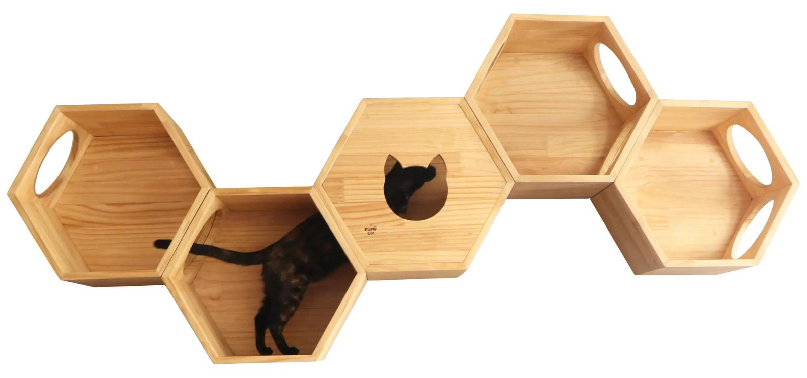
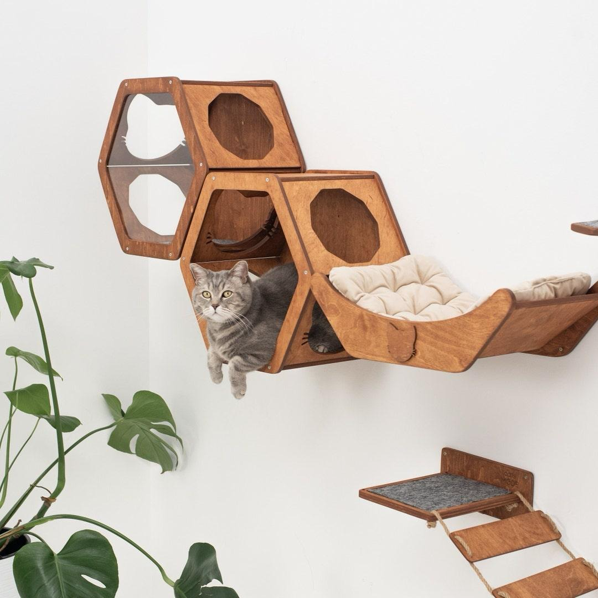
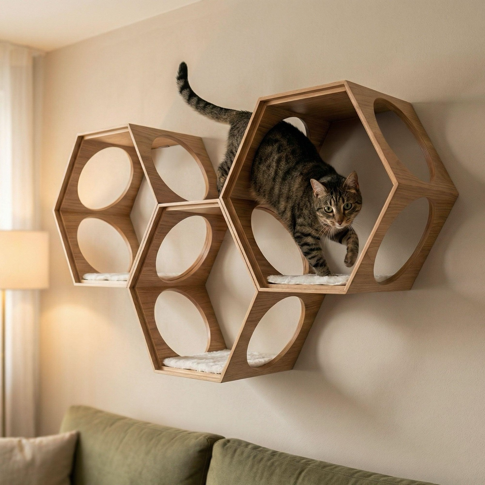
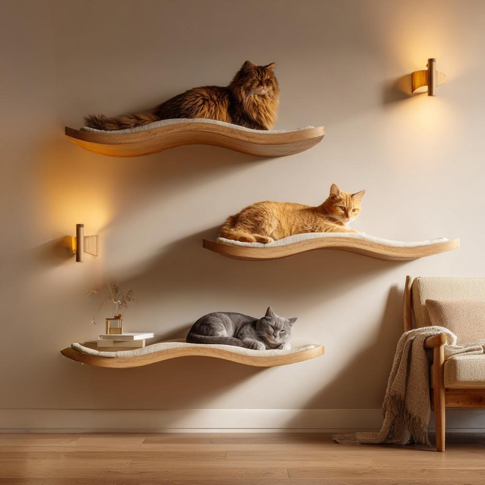
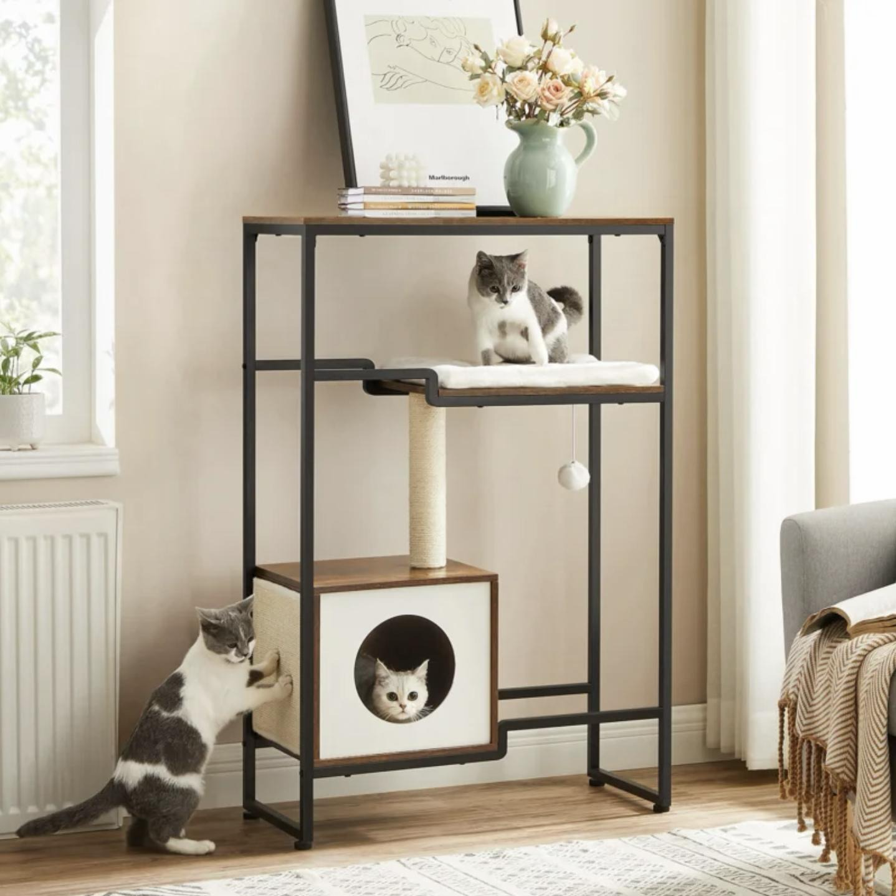
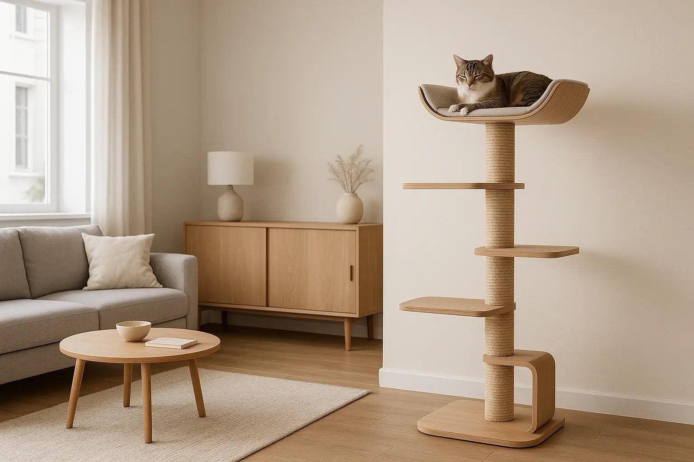
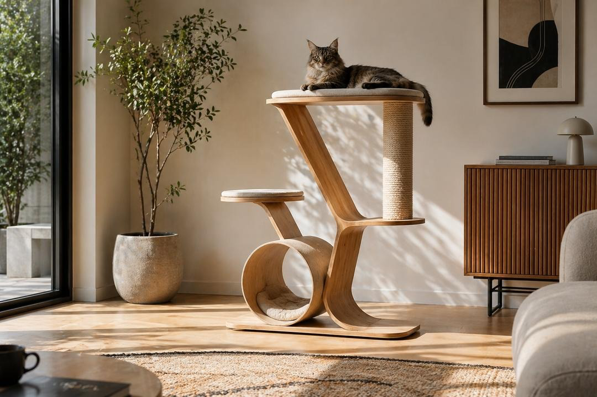
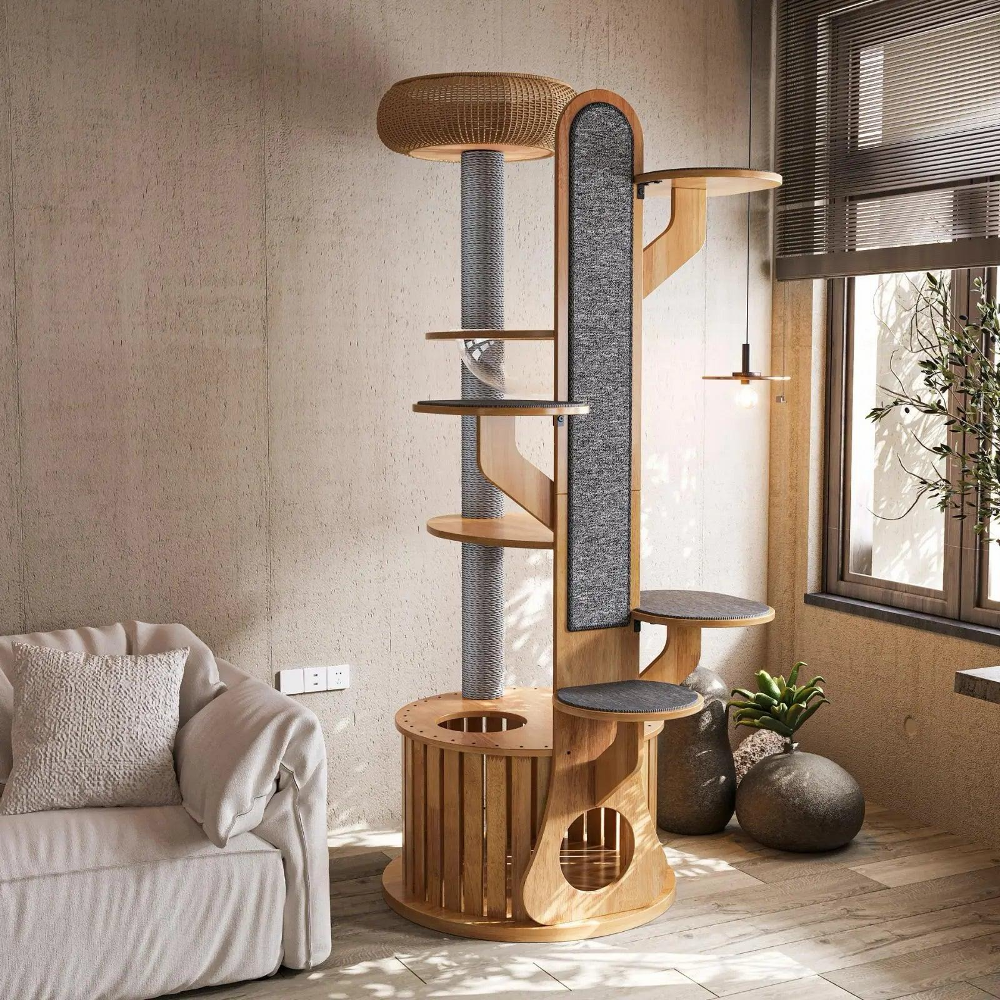

¿Quiénes somos?
En ComfyCat ofrecemos muebles diseñados para brindar comodidad, diversión y bienestar a los gatos.
¿Por qué elegir ComfyCat?
- Espacios para jugar y explorar.
- Lugares cómodos para descansar.
- Diseños pensados para los gatos.
- Ambientes que estimulan su actividad.